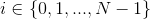
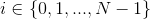
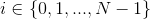

- punkt kontrolny. 
- punkt kontrolny.  N - ilość punktów kontrolnych
Krzywe Béziera są to krzywe parametryczne określone n punktami kontrolnymi. Mówi się, że krzywa taka jest n-1 -tego stopnia.
Krzywa taka jest zbiorem wszystkich punktów wynikających z określonego równania parametrycznego. Równanie krzywej Béziera jest opisane przez n współczynników, które najczęściej są punktami.
Punkty kontrolne można przesuwać. Aby aktywować przesuwanie, należy kliknąć lewym przyciskiem myszy na wybrany punkt. Aby go "postawić", należy kliknąć przyciskiem myszy ponownie. Klikając 'A' na klawiaturze można schować/pokazać linie pomocnicze pomiędzy punktami kontrolnymi. Ilość punktów kontrolnych można zwiększać i zmniejszać klawiszami 'Z' oraz 'X'. Początkowe pozycje punktów są generowane prawie losowo.
Uwaga, aby działała obsługa klawiatury należy kliknąć myszką na planszy.
Początkowo badania nad tymi krzywymi były objęte tajemnicą służbową. Były one były prowadzone przez konkurencyjne firmy Renault oraz Citroën. Pod koniec lat 60 XX w. pojawiły się pierwsze wzmianki na temat owych badań. Pierwszy upublicznił je Pierre Bézier pracujący dla Renault, a w roku 1972 zostały spopularyzowane przez artykuł w The Computer Journal[1].
t - parametr czasu. Aby zdobyć kształt całej krzywej należy zebrać punkty dla każdego t z przedziału [0, 1]
- punkt kontrolny. 
N - ilość punktów kontrolnych
Na przykład dla N = 4, wzór wygląda tak:
We wzorze widać, że występuje w nim dwumian Newtona w sposób podobny do tego jak we wzorach skróconego mnożenia, zatem w praktyce dobrze jest wykorzystać trójkąt Pascala.
Z podanego wzoru możemy ułożyć krzywą Béziera w przestrzeni o dowolnej liczbie wymiarów. Wzór należy wtedy zastosować osobno dla każdego z nich. W przypadku aplikacji zamieszczonej wyżej, mieliśmy doczynienia z planszą dwuwymiarową, a każdy punkt kontrolny miał określoną pozycję poprzez składowe x i y. Punkt krzywej dla danego t będzie na pozycji . Obliczając np. z podanego wzoru, jako będziemy używać
Sterowanie tak jak poprzednio{'A', 'Z', 'X'}. Krzywa czerwona oznacza krzywą Béziera na planszy dwuwymiarowej.
Niebieska krzywa oznacza krzywą powstałą tylko ze składowych X punktów kontrolnych. Oś pozioma(x-ów) oznacza czas t, gdzie lewa krawędź to 0 a prawa to 1. Na osi pionowej została zaznaczona wartość 
Analogicznie, krzywa zielona powstała poprzez oznaczenie osi pionowej (y-ów) jako czas, a osi poziomej jako wartość .
Krzywa czerwona jest "złożeniem" krzywej niebieskiej i zielonej.
Uwaga, punkty są (prawie) losowane. W szczególności oznacza to, że nie zawsze są one ułożone w kolejności od lewej do prawej, a krzywa może się układać "od końca".
Dotychczas zajmowaliśmy się krzywą Béziera jako całością. Prześledźmy jak zachowuje się ona dla konkretnych wartości czasu.
Pozycja myszy na osi poziomej oznacza czas t, gdzie lewa krawędź to 0 a prawa to 1.
Czerwony punkt oznacza jeden z punktów krzywej powstały dla wybranego czasu. Krzywa zaznaczona na czerwono jest zbiorem punktów powstałych dla czasu [0, t] a na czarno dla pozostałych. Suma krzywej czerwonej i krzywej czarnej to cała krzywa Béziera.
Klikając 'S', można wyświetlić krzywą zieloną i niebieską, obie o rolach identycznych jak w poprzedniej aplikacji.
Pamiętaj, że klawiszami 'Z' i 'X' możesz regulować ilość punktów kontrolnych.
Proszę zwrócić uwagę na to jak zmienia się położenie tego punktu w zależności od czasu. Raz zmiany mogą być powolne, musi minąć dużo czasu aby punkt się znacząco przemieścił, a innym razem zmiany te mogą być tak gwałtowne, że przez rozdzielczość nie będziemy mogli płynnie przesuwać myszki tak aby zmiana położenia była płynna. Zjawisko to dużo prościej zbadać, jeżeli włączymy tryb z poprzedniej aplikacji wciskając przycisk 'S'(proszę pamiętać o aktywowaniu planszy kliknięciem). Widać wtedy, że szybki wzrost/spadek na zielonej/niebieskiej krzywej oznacza szybką zmianę krzywej czerwonej.
Możemy rozpatrywać tutaj pochodną krzywej Béziera. Będzie ona również "krzywą Béziera", z tym że będzie się różnić wartościami dwumianu Newtona dla danego stopnia. Podobnie jak w przypadku wielomianów, pochodna krzywej Béziera ma stopnień o jeden mniejszy.
Uwaga, poprzednio lewy górny róg planszy miał współrzędne (0, 0) a prawy dolny (1, 1), czyli była rozpatrywana tylko jedna ćwiartka układu współrzędnych. Teraz, aby cały rysunek się zmieścił, potrzebne będą cztery ćwiartki, zatem lewy górny róg to teraz(-0.5, -0.5) a prawy dolny to (0.5, 0.5).
Na czerwono malowana jest krzywa Béziera, a na turkusowo pochodna
Widoczne jest, że punkt końcowy pochodnej(dla czasu t = 1) znajduje się w punkcie (0, 0). Pozycja punktu początkowego pochodnej jest zależna od pozycji pierwszego punktu kontrolnego względem drugiego. W szczególności można zaobserwować, że z niej wyjdzie. Jest jednak pewne że o ile wszystkie punkty kontrolne mieszczą się na planszy, to wszystkie "punkty kontrolne" pochodnej będą się mieścić na planszy cztery razy większej(2 * 2). Wynika to z faktu że może być maksymalnie dwa razy większe od rozmiaru jednego wymiaru planszy, na której znajdują się punkty kontrolne.
Początek krzywej jest w pierwszym punkcie kontrolnym, a koniec - w ostatnim.
Wszystkie punkty należące do krzywej Béziera należą również do wnętrza otoczki wypukłej stworzonej z punktów kontrolnych tej krzywej.
Krzywa Béziera jest odcinkiem wtedy i tylko wtedy, gdy wszystkie jej punkty są współliniowe.
Istnieje pewien sposób, który pozwala geometrycznie skonstruować krzywą Béziera. Wymaga on jednak sporej ilości pracy, więc konstruowanie krzywej za pomocą cyrkla i linijki, choć możliwe, nie byłoby najlepszym pomysłem.
Wyobraźmy sobie, że łączymy odcinkami kolejne punkty kontrolne, dokładnie tak samo jak wyżej rysowały się linie pomocnicze. Powstałych odcinków będzie N - 1. Następnie na każdym z tych odcinków zaznaczamy punkt (C). Punkt ten będzie w takim miejscu, że (A - początek odcinka, B - koniec odcinka).
Następnie łączymy odcinkami wszystkie powstałe punkty C. (To ważne aby robić to w odpowiedniej kolejności). Powstałych odcinków będzie wtedy N - 2. A całą operacje możemy powtarzać, aż dojdziemy do momentu, gdy będziemy mieć tylko jeden punkt C, więc nie będziemy mogli zbudować odcinka. Punkt ten, będzie punktem należącym do krzywej Béziera, którego czas to t.
Pamiętaj, że klawiszami 'Z' i 'X' możesz regulować ilość punktów kontrolnych.
W praktyce krzywe Béziera wyższych stopni nie są łatwe do obliczeń. Trudno jest uzyskać kształt, krzywej który jest złożony i skompilowany. Równie trudno jest go człowiekowi efektywnie go wymodelować.
Okazuje się, że wystarczy w odpowiedni sposób "sklejać" krzywe Béziera trzeciego stopnia, tak aby uzyskać (prawie) dowolny kształt.
Załóżmy że mamy N ( N = 1+3k gdzie k należy do liczb naturalnych) punktów. Krzywą Béziera trzeciego stopnia możemy narysować, używając czterech punktów kontrolnych. Narysujemy te krzywe tak, aby ich końce były ze sobą połączone, czyli czwarty (ostatni) punkt kontrolny krzywej i, musi być taki sam jak pierwszy punkt kontrolny krzywej i+1.
Dla krzywej i-tej (indeksuję od zera):
Pierwszy punkt kontrolny: 3*i -ty punkt danych
Drugi punkt kontrolny: 3*i+1 -ty punkt danych
Trzeci punkt kontrolny: 3*i+2 -ty punkt danych
Czwarty punkt kontrolny: 3*i+3 -ty punkt danych
Pamiętaj, że klawiszami 'Z' i 'X' możesz regulować ilość punktów kontrolnych.
Klawiszami {'Q', 'W', 'E'} można zmieniać tryb edycji.
Dla ułatwienia edycji, zmiana położeniua punktu, przez który przechodzi krzywa, przenosi również okoliczne punkty kontrolne.
Stosując taki model, możemy w prosty sposób stworzyć (prawie) dowolny kształt. Dodatkowo, co często może być przydatne, możemy tworzyć gwałtowne załamania krzywej, odpowiednio ustawiając punkty kontrolne.
W edytorach używających krzywych Béziera najczęściej wyróżnia się trzy tryby edycji punktów kontrolnych:
Charakteryzują się tym, że każdy punkt kontrolny ma przypisaną swoją wagę. Dzięki temu możliwe jest tworzenie jeszcze bardziej zaawansowanych kształtów. Używając krzywych wymiernych, możemy stworzyć nawet okrąg, podczas gdy w przypadku krzywych wielomianowych, możemy co najwyżej przybliżyć je do kształtu okręgu.
Kliknij lewym przyciskiem myszki na dowolny punkt. Wciskaj przyciski 'N' lub 'M' podczas przenoszenia, aby zmniejszyć bądź zwiększyć wagę punktu kontrolnego. Możesz podejrzeć tę wartość w lewym górnym rogu podczas przenoszenia.
Początkowo wartości wag są ustawione na 1.
Pamiętaj, że klawiszami 'Z' i 'X' możesz regulować ilość punktów kontrolnych.
Zaobserwować można, że im większa waga, tym krzywa jest bardziej "przyciągana" do punktu kontrolnego, a im mniejsza, tym bardziej "odpychana". W szczególności wartość zero oznacza, że punkt nie jest brany pod uwagę. Gdy waga będzie ujemna, może powstać coś na kształt hiperboli, jednakże, ze względu na uroki metod numerycznych, będziemy widzieć jedną linie łączącą skrajne wartości(otaczające x=0 przy y=1/x)
Gdzie to waga punktu i.
Gdy waga będzie rosła, krzywa zbliży się do tego punktu, jednak nigdy go nie osiągnie (pomijamy przypadek skrajnych punktów kontrolnych). Jest to bardzo ważna własność w przypadku stosowania krzywych Béziera do projektowania.
Krzywe Béziera wykorzystywane są głównie w grafice komputerowej, projektowaniu, architekturze itp. Za ich pomocą można generować kształty, które potem da się łatwo edytować. Stanowią one podstawę grafiki wektorowej. Używane są między innymi w projektowaniu czcionek komputerowych oraz w animacjach komputerowych.
Wykorzystuje je oprogramowanie takie jak: Blender, GIMP, Inkscape czy CorelDraw.
Również tutaj znalazły szerokie zastosowanie ze względu na swoją naturę. Dzięki nim można np. projektować ścieżkę, po której będzie się przemieszczać obiekt czy kamera podczas animacji. Używając wysokich wag w przypadku krzywych wymiernych, można projektować ścieżkę, która prawie będzie przechodzić przez punkty kontrolne.
Tworząc animacje komputerowe, bądź gry, potrzebujemy, aby wartości zmiennych płynnie zmieniały się w czasie, tak, abyśmy mogli kontrolować ich wartości początkowe, końcowe oraz sam przepływ. Wszystko to możemy łatwo osiągnąć i zaprojektować, używając właśnie krzywych Béziera.
Poniżej chciałbym przedstawić odsyłacze do kilku interaktywnych animacji wykorzystujących krzywe Béziera, stworzonych przezemnie w 2013r.
Pięć wiodących trójkątów. Wierzchołek każdego ma własną losową krzywą Béziera z której pobiera wartości(x, y), oraz kolory (r, g, b, a). Specjalny efekt "wcześniejszych pozycji". (Uwaga, znika myszka)
Występują dwie fazy. Pierwsza ma miejsce zaraz po kliknięciu myszką. Startuje wtedy dążąca do środka krzywa Béziera. Ruszając myszką, podczas gdy krzywa się rozwija, modyfikujemy mnożnik dla wartości dwumianów Newtona. Gdy krzywa się schowa, rozpoczyna się druga faza. Wyświetlana jest rozwijająca się kolorowa krzywa Lissajous oparta na spirali o stałym skoku z parametrami pobieranymi z położenia myszki. Można wrócić do fazy pierwszej klikając ponownie myszką.
Prawdziwe wyzwanie dla artystów. Komputer steruje trzema krzywymi Béziera. Dwie z nich są łączone. Ty sterujesz krzywą która łączy się z trzecią pozostałą. Kliknięcie myszką resetuje plansze.
Nie każdy ma zdolności manualne, ale każdy może być artystą. Wystarczy, że, trzymając przycisk myszy, narysujesz dwie krzywe, a komputer zajmie się resztą. Prawy przycisk myszy czyści plansze. Kolory są pobierane z losowych krzywych Béziera.
Aby się animowało, należy najechać myszką na planszę.
Dla prostego obrazowania załóżmy, że na planszy mamy dwie niezależne od siebie krzywe Béziera. Wartość x pierwszej krzywej w chwili t niech oznacza wartość koloru czerwonego. Dla koloru zielonego będzie to wartość y, a kolor niebieski i alfa niech wynika z x i y drugiej krzywej.
Tło przedstawia utworzoną paletę kolorów. Oś x-ów oznacza czas.
Przyciskiem 'H' można wyłączyć/włączyć tryb Alpha. Gdy jest on włączony, to kolor alfa jest pobierany ze składowej y-kowej niebieskiej krzywej. Gdy jest wyłączony, to jest on pomijany.
Przyciskiem 'J' można włączyć/wyłączyć kolorowanie całej planszy.
Przyciski {'A', 'Z', 'X'} działają.
Już samo pokolorowanie pionowych pasków kolorami z palety kolorów robi wrażenie. Najistotniejsze jest to, że tak utworzoną paletę, możemy zastosować do jednego z wielu algorytmów graficznych, które można pokolorować. Przykładem może być chociaż fraktal Mandelbrota lub atraktory. Jest to jednak temat na kolejną prezentację...
Dziękuję za uwagę, Ag
1618.pl